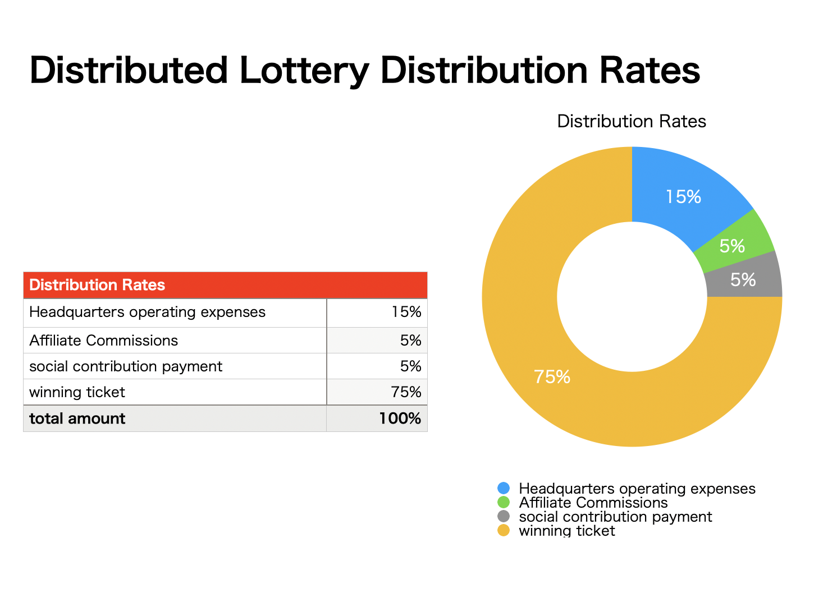
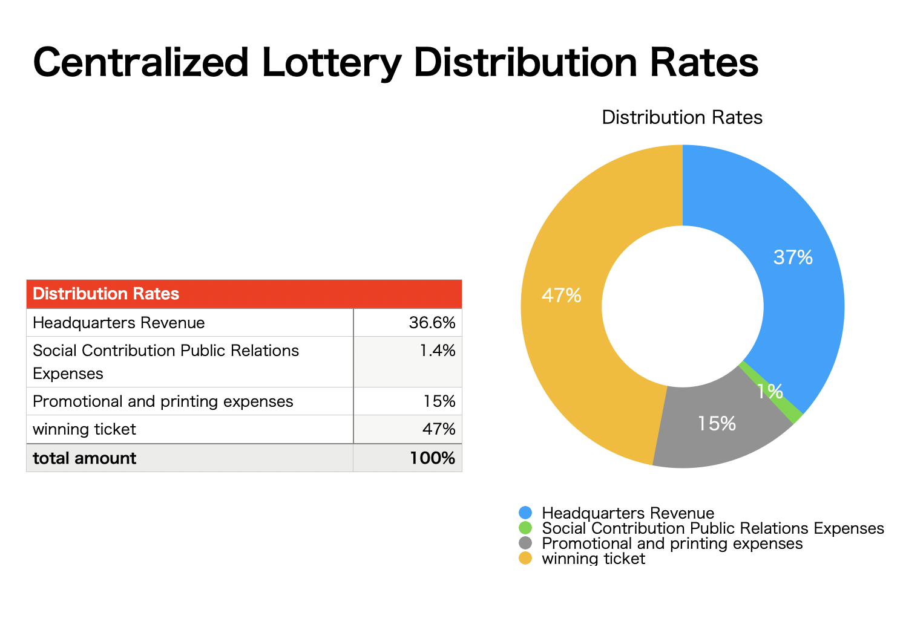
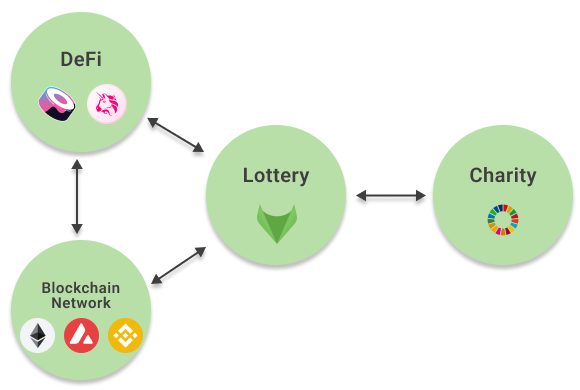
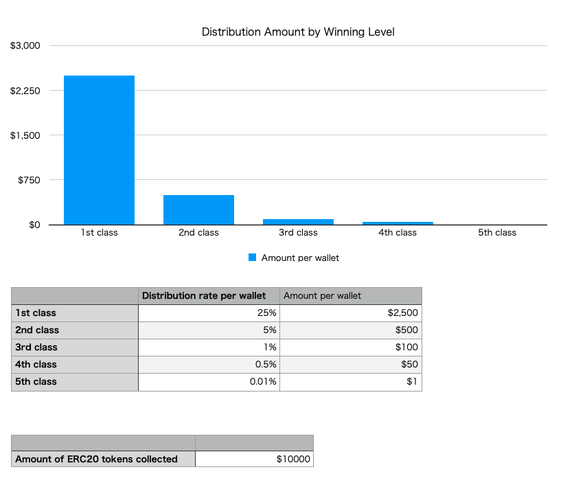

Foxlottery

Overview
FoxLottery is a fully decentralized lottery using crypto assets and smart contracts. ERC20 tokens collected from users are distributed to random winners. Staking a FoxLottery Token entitles you to a portion of the lottery proceeds and the right to vote on how the proceeds are used for charitable purposes. Staking users' votes determine how the money is used for charitable activities, and the money is transferred to the charity's wallet.
While a regular lottery ticket gives back about 50% of the proceeds. Foxlottery will return 75% to users, 5% to affiliate users, the remaining 15% to revenue, and 5% to non-profit expenses.
Lottery proceeds will be used for the following
- Operated by DeFi
- PR activities
- Development funds
- Building an ecosystem
- Dividends to staking wallets
Foxlottery's organization will work towards becoming a fully DAO (self-sustaining decentralized organization).
Vision
Decentralized lotteries improve society
Challenges of centralized lotteries
- Lack of transparency.
- Low distribution rate.
- A portion of profits are used for charity, but where to donate is centrally determined.
- Large amount of money spent on sales promotion.
- Paper raffles are not good for the environment.
- When you win a prize, you have to go to the bank to pick it up.
Solutions and functions to solve the problems
- Transparent determination of winners
- High distribution rate
- Affiliates reduce promotion costs
- Vote on where to donate proceeds when purchasing lottery tickets
- DAO-ization
- Winnings are automatically transferred to your wallet when you win.
Transparent winner determination
Since random numbers are generated on the blockchain, winners can be determined transparently.
High distribution rate
Advantages of decentralized lotteries
- Low operating costs
- Affiliate functionality keeps promotional costs low.
- Winning money is high.
- Charity expenses are high, and the recipients of the funds used are determined by voting.

Disadvantages of a centralized lottery
- A high percentage of revenue is generated by headquarters.
- Printed on paper, which is expensive to print and bad for the environment.
- Social contribution PR expenses are low, and the recipients of the funds are centrally determined.
- The amount of winning money is small.
This is an example of a Japanese lottery.

Reduce promotional costs with affiliates
Affiliates can refer users to Foxlottery and receive a sales commission when users buy lottery tickets.
Affiliates need to staking Foxlottery's ERC20 tokens above a certain amount to participate. 5% of the amount of lottery tickets purchased is paid to the affiliate as an affiliate commission. If not through an affiliate, the funds are paid to the Foxlottery management. Therefore, the lottery participant pays the same amount whether he/she participates through an affiliate or directly from the Foxlottery operation's website.
Vote for where to donate the proceeds when you buy your lottery ticket
When purchasing lottery tickets, users select the SDG goals they want to achieve For each goal, select an organization that is active in that area.
After the lottery is over, a portion of the proceeds will be immediately remitted to the organization determined by the vote. This speedy approach to philanthropy makes society more peaceful and prosperous.
Charitable organizations can apply to Foxlottery to have their profile and wallet address placed on the donation list.
DAO-ization
Governance token holders set the policy for the application. The owner organization handles marketing activities and development. Staking will receive a portion of the proceeds.
When you win, the money is automatically transferred to your wallet.
Japanese lottery tickets require a person to bring identification to a bank on a weekday at noon for a large lottery win. With blockchain, the money is automatically transferred to your wallet when you win and can be used on the same day.
Some foreign lotteries are forfeited if you do not pick up your lottery ticket within 7 days of the winning date. By having the money sent automatically, you will not forget to get it.
Ecosystem
We'll keep this ecosystem turning. Charity work, DeFi, Lottery, Contribution to the blockchain network

Operate with DeFi using funds applied by the lottery
Set up a weekly lottery, with a slightly higher chance of winning if deposited in the lottery on the first day of the week. Allow more funds to be collected on the first day of the week. The collected ERC20 tokens will be invested in uniswap or other means to generate income.
How to use the lottery participants
You can purchase Foxlottery tokens on exchanges or DeFi and There are daily, weekly, monthly, and annual lottery smart contracts, so you can deposit funds into whichever one you like. You vote on how you want to use the funds for charitable activities. Once you have deposited your funds, you will be shown how likely you are to win. On the day of the winner, a winner will be chosen at random and the money will be automatically transferred to the winner. The money will be sent to the organization that will use the charitable activities as determined by the vote.
Marketing Strategy
We give away free lottery tickets to users who retweet and follow us on Twitter without having to buy a Foxlottery lottery ticket.
Winning amount simulation

Development Plan
2022Q2 Make lotteries available using Foxlottery (ERC20) tokens, bug bounty in place 2022Q3 Lock lottery lock funds in DeFi operation, with other ERC20 tokens, to be made available as a lottery ticket. 2022Q4 Make lottery tickets available with the winning prize as NFT
ICO Plan
2022Q3 ICO
Total amount issued: To be determined Supply: not yet determined
SDGs
A global, decentralized, trustless lottery to achieve the SDGs (Sustainable Development Goals).
Lottery Market Size
Japan: 786.6 billion yen FY2018 Cited from: https://www.soumu.go.jp/main_content/000583736.pdf
World: $200 billion
The global lottery market size will increase by US$19.414 billion from 2020 to 2025. Quote: https://www.prnewswire.com/news-releases/lottery-market-size-to-grow-by-usd-194-14-bn--38-of-the-growth-from-apac--17-000-technavio-reports-301501174.html
Lottery laws in each country
Lottery laws in major developed countries
Japan
The issuance of lottery tickets for sale by ordinary individuals or companies is prohibited under Article 187 of the Penal Code. Lottery tickets can be sold by the national prefectures and 20 designated cities, i.e., local governments, as stipulated in the Lottery Law "Lottery Prize Certificate Law" (enacted in 1948). These local governments are authorized by the Minister of Internal Affairs and Communications to act as ticket sellers and outsource ticket sales and other operations to banks and other financial institutions.
Reference: https://www.takarakuji-official.jp/about/structure.html
U.S.A.
As in Japan, lotteries issued by local governments are permitted. Cited from: https://en.wikipedia.org/wiki/Lotteries_in_the_United_States#States_with_no_lotteries
Dubai
Although prohibited for religious reasons, there are some government-issued lotteries. The Multi Millionaire lottery is sold at the Dubai and Abu Dhabi airports, where the winner receives $1 million and other prizes such as cars and motorcycles are given away. Quote from: http://www.dubaicityguide.com/m/features/index.asp?id=8876#.YjatFJPP30o
Areas where virtual currency and online casinos are legal
- Republic of Malta
- Gibraltar (United Kingdom)
- Isle of Man
- Alderney Island
- Iceland
- Canada (Kanawake)
- Curaçao Island
The most promising is Malta
Lotteries are not regulated and issue licenses for online casinos. You can start a lottery business without an online casino license, but a license gives you more credibility. Cited from: https://thelawreviews.co.uk/title/the-gambling-law-review/malta
ICO with virtual currency is possible if you apply for it. Quote from: https://www.csbgroup.com/fintech/initial-coin-offering-ico-malta/
Team
Seiya Takahashi 24 years old, Japanese software engineer. Experienced in software development for large Japanese companies and startups, he founded Foxlottery in 2022. Interested in Bitcoin in 2016, learned blockchain concepts and started touching Solidity in 2020.
github: https://github.com/PeterTakahashi twitter: https://twitter.com/_PeterTakahashi
Members wanted
CFO Fundraising, Finance
CTO Smart contract development in Solidity Front-end development with React
CMO Marketing, PR
CCO Community management such as DISCORD
Welcome Requirements All in both English and Japanese or English only
For technical specifications
Tools used
Solidity Hardhat Alchemy
Blockchain network
Developed in Solidity, so can be used with Ethereum, Binance, Polygon, Avalanche, etc.
Mechanism to ensure randomness of winnings
Chainlink VRF can be used to get random numbers that can be verified on the blockchain. https://docs.chain.link/docs/chainlink-vrf/
Chainlink VRF has been used by PancakeSwap and PoolTogether.
PancakeSwap
Lottery operated by DeFi on the Binance Smart Chain https://pancakeswap.finance/lottery
PoolTogether
No-loss lotteries, DeFi pooled profits to be distributed by lottery to pooled users https://PoolTogether.com/